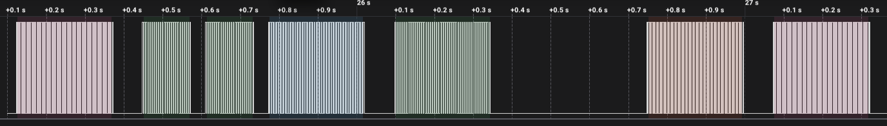
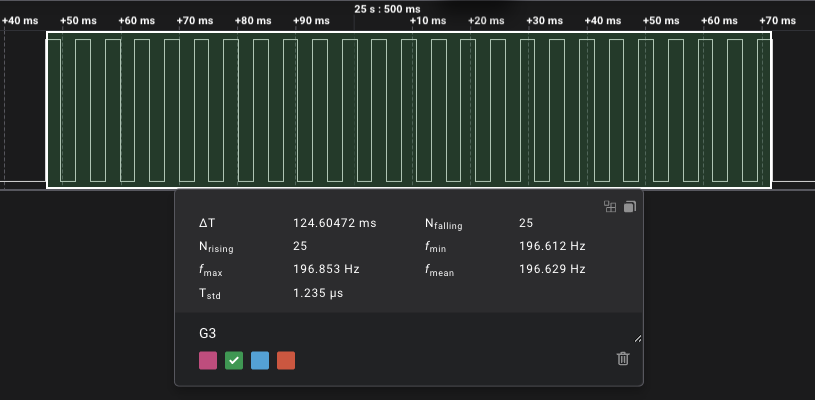

Melody
Vamos a explicar desde la cero cómo reproducir melodías usando tonos generados por un timer en un AVR128DA28 con un buzzer / altavoz piezoeléctrico. Para eso vamos a estudiar en profundidad una melodía muy famosa y más si eres padre, que es la primera pieza “Twinkle, Twinkle, Little Star” (Estrellita, ¿dónde estás?) de una canción infantil del siglo XVIII (melodía de Ah! vous dirai-je, maman de Mozart) que tambien la usa Arduino en su ejemplo.
Vamos a ir descomponiendo la melodía, notas, tonos, y así hasta llegar al código fuente que los genera.
Si conectamos un analizador lógico (logic analyzer) a la salida del MCU que reproduce dicha melodía obtenemos una muestra de pulsos que se parecen a la siguiente imagen:

Estas son las notas y la duración de cada nota de la melodía “Twinkle, Twinkle, Little Star”. La primera línea son las notas, y la segunda los tiempos.
NOTE_C4, NOTE_G3, NOTE_G3, NOTE_A3, NOTE_G3, 0, NOTE_B3, NOTE_C4
4, 8, 8, 4, 4, 4, 4, 4
Si buscamos en la libreria de tonos musicales pitches.h obtenemos solo estas cuatro notas que conforman la melodía:
#define NOTE_G3 196
#define NOTE_A3 220
#define NOTE_B3 247
#define NOTE_C4 262
Por ejemplo, la nota NOTE_G3 tiene el valor 196, que corresponde a la frecuencia de 196 Hz.
